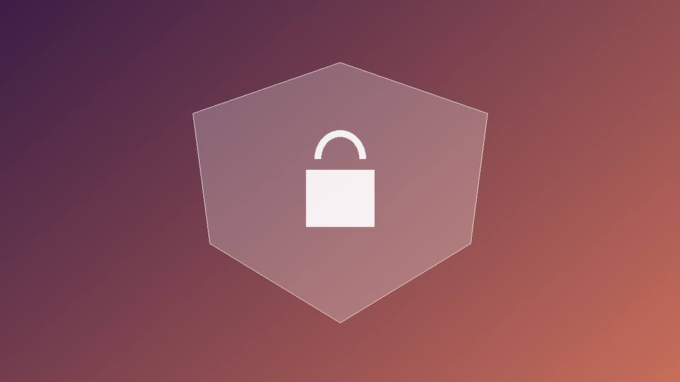

Безопасность и надёжность данных
Главные угрозы для базы данных сайта и способы защиты.

SQL-инъекции
Если подставлять ввод пользователя прямо в строку запроса, злоумышленник сможет изменить смысл команды. Защита — параметризованные запросы.
-- Опасно
"SELECT * FROM users WHERE email = '" + email + "'"
-- Безопасно
cursor.execute("SELECT * FROM users WHERE email = %s", (email,))Чек-лист защиты
- Хранить пароли только в виде хэшей с солью (bcrypt, argon2).
- Выдавать приложению минимально необходимые права.
- Не открывать порт базы в интернет.
- Шифровать соединение (TLS) и резервные копии.
- Не хранить секреты в репозитории.
Разграничение прав доступа
У приложения не должно быть учётной записи администратора базы данных. Обычно заводят отдельного пользователя с правами только на нужные таблицы и только на нужные операции.
CREATE USER app_user WITH PASSWORD 'секрет';
GRANT SELECT, INSERT, UPDATE ON orders TO app_user;
REVOKE DELETE ON orders FROM app_user;Так даже при взломе самого приложения злоумышленник не сможет, например, удалить таблицы или изменить структуру базы.
Резервное копирование
Копия, которую ни разу не пробовали восстановить, не считается копией. Настройте регулярные бэкапы, храните их отдельно от сервера и периодически проверяйте восстановление.